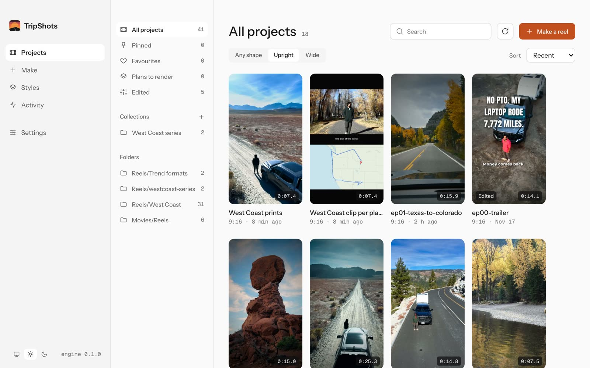
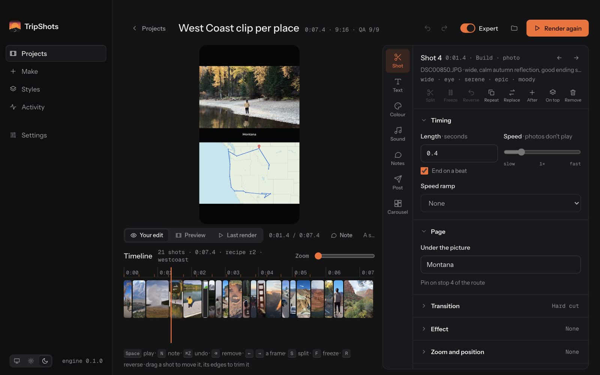
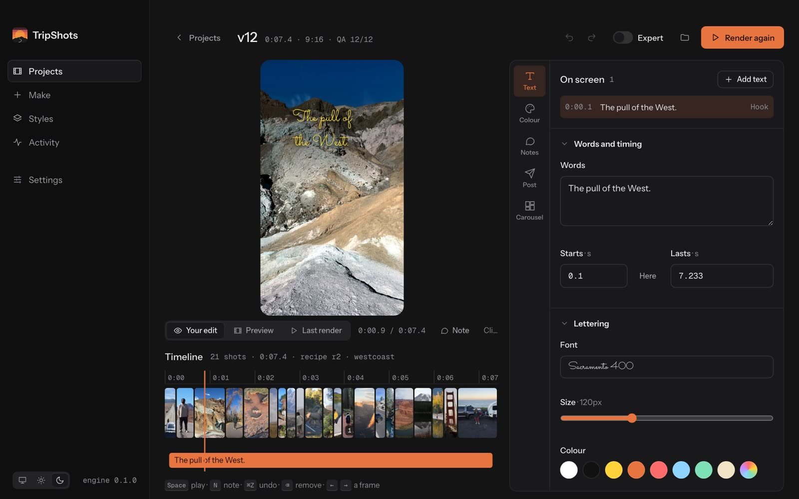
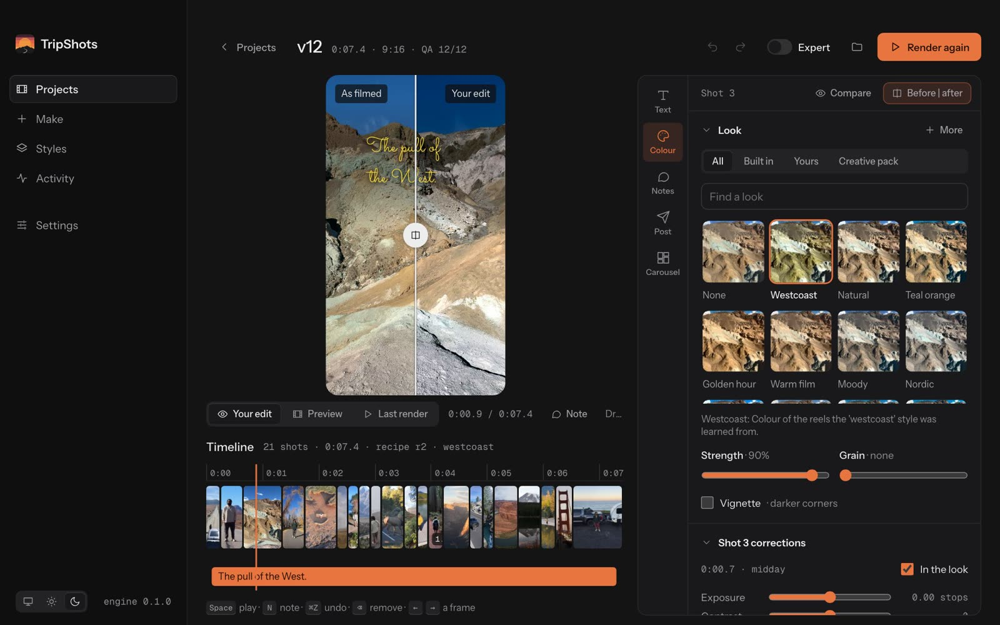
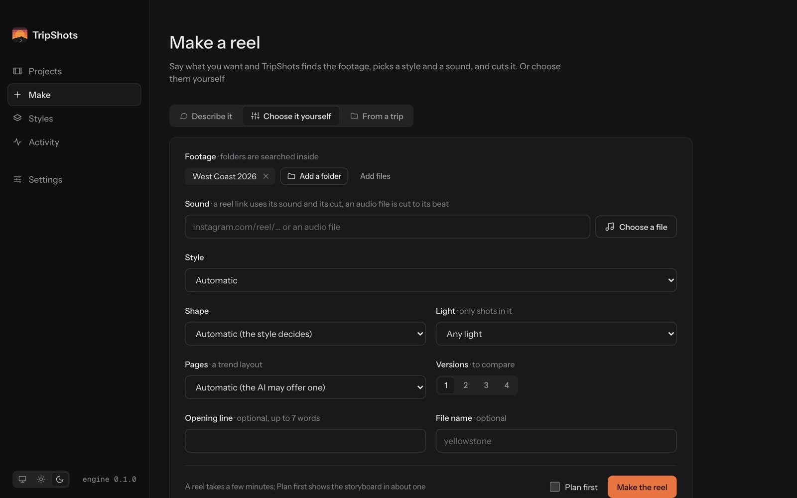
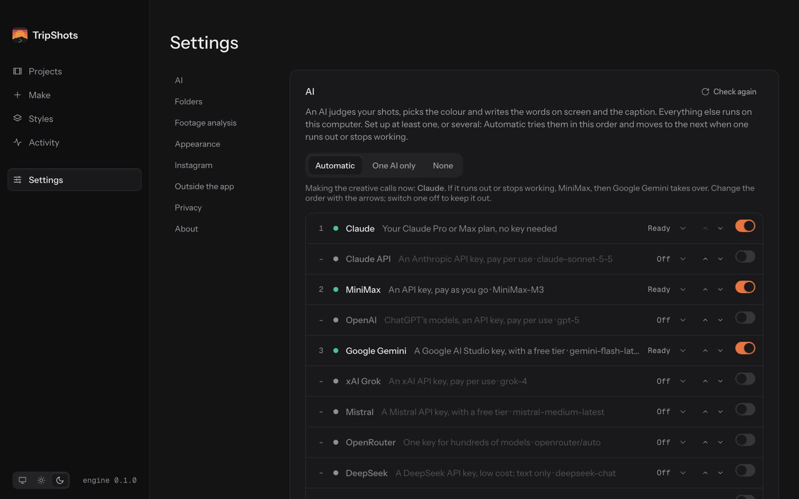

Your trip, cut to the beat.
TripShots turns your own travel clips and photos into Instagram Reels. It finds the strongest shots, cuts them on the beat of your song, grades the colour and adds the words. Nothing is generated: every frame is yours.
Free and open source. For Mac with Apple Silicon, Windows and Linux.
From a folder of footage to a reel you can post
-
01
Point it at your trip
A folder on your SSD, your phone's photos or a drone card. Or just say it: “a reel about my days in Yellowstone”. It finds footage by place, date or who's in it.
-
02
Pick a sound
A song file or the link to a reel whose sound you like. TripShots reads its beats, its quiet parts and its drop.
-
03
It edits like a person would
A hook in the first second, a build, the best shot on the drop. Colour, text, transitions, sound effects and a route map, all from your footage.
-
04
Change anything, then post
Swap a shot, change the words, try another look. You get the reel, a cover, a caption with hashtags and the edit for Resolve or Premiere.
The desktop app
A small native app with light and dark themes. The engine downloads once on first launch, checked against TripShots' signature, and keeps itself up to date.

Every reel, in one place
Your reels grouped by folder, upright and wide side by side. Pin the good ones, gather a trip into a collection and see what's being made right now.

An editor on one screen
The viewer, the timeline with the beats, and the shot's timing, speed, transition and framing. Lengths snap to the beat, and every change can be undone.



Describe it, or choose it yourself
Write one sentence and TripShots picks the footage, a style and a sound. Or choose the footage, sound, style, shape and how many versions to make, and watch it work step by step.

Bring the AI you already have
Your Claude Pro or Max plan, or a key for the Claude API, OpenAI, Gemini, MiniMax, Mistral, Grok, DeepSeek or OpenRouter, or a local model in Ollama. Setup takes a minute, with a Test button for each one.
What it does for you
Learns from reels you like
Give it links to reels and it learns each one's cuts, picture shape, words and lettering, then follows that recipe with your footage.
Finds your footage
By place, matched by GPS inside the park's real outline, by dates, or by who's in it, with face recognition that runs on your computer.
Tells a story
A hook, a build, a payoff on the drop and an ending that loops. A critic checks the plan before anything renders.
Looks finished
Colour grading per shot, titles behind the skyline, speed ramps, freeze frames, split screens and animated route maps.
Sounds finished
Real sound effects and ambience timed to every cut and title, from openly licensed libraries.
Remembers your footage
Each file is judged once, so the next reel from the same trip is quick and uses different shots.
Works with AI agents
An MCP server for Claude and any MCP agent, plus an agent skill and
tripshots ask.Hands off cleanly
Open the edit in DaVinci Resolve or Premiere, or finish it in Instagram's Edits with the song left to add there.
Stays on your computer
Your footage is read where it is, never uploaded. The AI you choose sees small stills, and usage counts stay off unless you say yes. Every outside service is listed.
Prefer the terminal?
Everything in the app is a command too, with a terminal app of its own. Plan a reel, look at the storyboard, then render it.
# macOS: ffmpeg, Python 3.12 and TripShots
git clone https://github.com/abelkuruvilla/tripshots
cd tripshots && ./install.sh
# plan a reel and its storyboard, then render
tripshots make ~/Pictures/Banff -m song.mp3 --dry-run
tripshots render reels/Banff-*.plan.json
# or just ask
tripshots ask "a reel about my days in Yellowstone"Download TripShots
The latest release, for every system.
Mac
Apple Silicon (M1 or newer), macOS 11 or later
Download .dmgAlso needs ffmpeg: brew install ffmpeg. If macOS won't open it, allow it in System Settings > Privacy & Security.
Windows
Windows 10 or 11, 64-bit
Download installerIf SmartScreen warns you, choose More info, then Run anyway.
All files and release notes are on GitHub Releases.